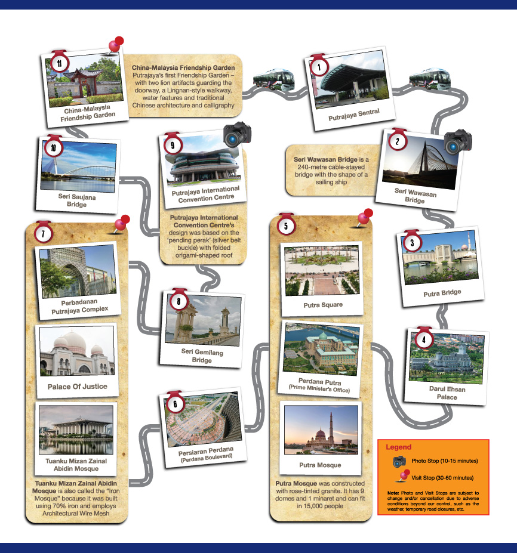

Putrajaya Sightseeing membawa pelancong melalui beberapa destinasi menarik di sekitar Putrajaya. Pelancong akan menikmati keindahan Putrajaya sebagai "bandar dalam taman" dan "bandar pintar".
Tambang
Dewasa: RM20
Kanak-kanak (2-12 tahun): RM10
Waktu Berlepas
Isnin sehingga Ahad : 11:00 AM & 3:00 PM
Jumaat : 3:00 PM sahaja
Tempat Bermula dan Tempat Berakhir :
Putrajaya Sentral - Terminal A, Platform 6
Cara Pembayaran : TUNAI SAHAJA
Tiket boleh didapati di kaunter Putrajaya Sightseeing di Putrajaya Sentral dan kaunter tiket KLIA Ekspres.
* Maklumat lanjut di laman sesawang KLIA Ekspres
Maklumat lanjut perkhidmatan sila hubungi 03-8861 8906 / 03-8893 5788
Lokasi lawatan Putrajaya Sightseeing
